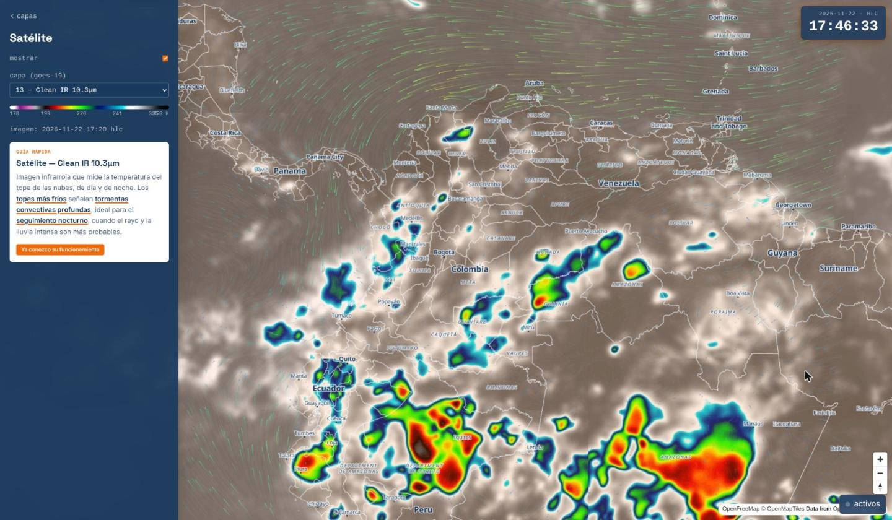
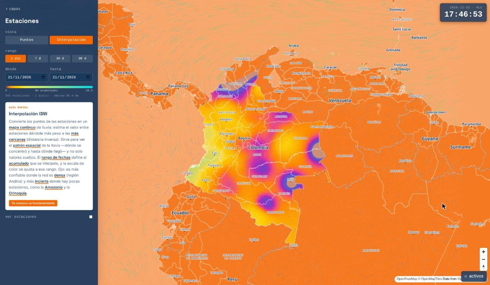
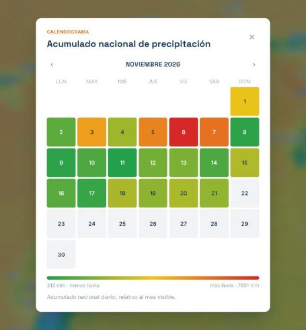
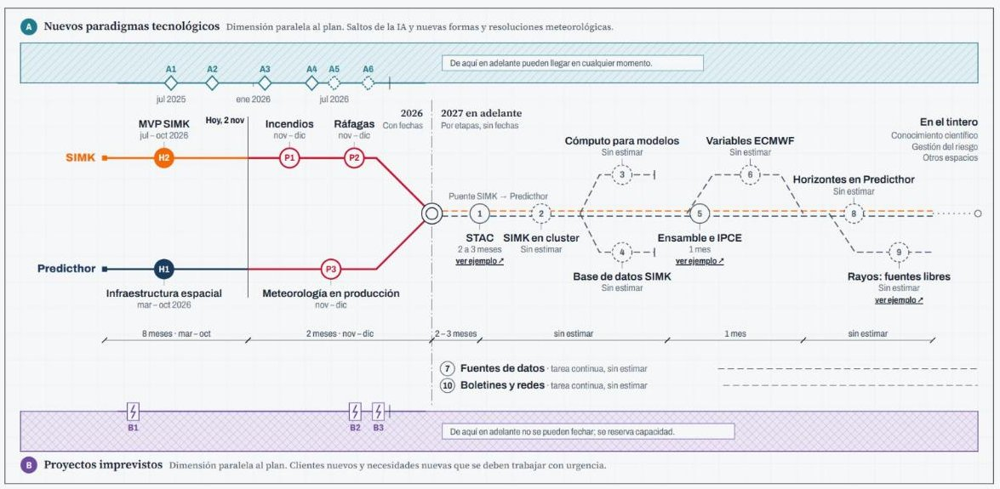

What SIMK is for
Keraunos detects lightning and turns it, together with weather forecasts, into risk information for power grids and other critical infrastructure. Its customer platform is Predicthor. SIMK is the internal system that sits next to it: the place where the company's leadership and engineers look at forecasts, satellite and station data, and where new weather products are tested before they reach Predicthor.
That role shaped two decisions. The data had to be stored in a way that could later move to the main platform without being rebuilt. And the interface had to be readable by people who are not meteorologists.
The data underneath
Weather data arrives as large gridded files: ECMWF, GFS and WRF forecasts in GRIB or NetCDF, GOES-19 satellite images, rain gauges from IDEAM's station network. I chose a cloud-native stack to hold and serve all of it:
- Zarr datacubes for model forecasts, with one chunk layout for drawing a whole map at one time step and another for reading a long time series at one point. Each kind of request reads the few chunks it needs.
- A STAC catalog that says which run, variable and time step exists and where it lives, so the frontend never has to guess file names.
- Cloud-Optimized GeoTIFFs for satellite bands.
- A tile service on FastAPI and TiTiler that packs the physical value (degrees, millimetres, kelvin) into the pixels instead of a ready-made color.
New runs are published next to the old ones and swapped in when they are complete, so a map never shows a half-written forecast.
I tried all of this in SIMK first. Once the rest of the development team saw it working, they adopted the same stack and conventions to migrate Predicthor's weather infrastructure. That migration was a team effort; the architecture and its conventions were the part I brought.
Color happens in the browser
Because the tiles carry real values, the map is drawn on the GPU. A forecast field is uploaded to WebGL as a single texture with linear filtering, and a small color table turns each value into a color. The same tile works for any palette, the field stays smooth when you zoom, and the wind is drawn on top as animated particles. Vector layers such as administrative boundaries come from PostGIS through Martin.

An interface that explains itself
The map takes the whole screen. A half-circle menu opens from the left with five sections: Forecast, Outlook, Satellite, Stations and Plan. Each section opens a narrow panel with only the controls it needs: source, run, variable, time.
The part I care about most is the quick guide on every layer. It is a short card in plain Spanish that says what the variable measures and what it is useful for in the field. Temperature helps plan field crews, anticipate the load on transmission conductors and estimate electricity demand. The infrared band shows where deep storms are. The guide can be dismissed once you know the layer, but it is there for anyone opening SIMK for the first time.
The data is only useful if the person looking at it knows what to do with it, so I treated these explanations as part of the product.

A calendar for the whole country
The clock in the top-right corner is also a door. Clicking it opens the calendograma: the current month as a grid of days, each colored by how much rain fell across the country that day, from green for the driest days to red for the wettest. The scale is relative to the visible month, so a single glance shows which days stood out, and hovering a day gives the exact amount. It answers a question people ask constantly, "how bad was it this week?", without opening a single layer.

What is in it
- Forecast: ECMWF, GFS and WRF, plus a precipitation ensemble that blends the three, with run, variable and time controls and animated wind.
- Outlook: IPCE, a monthly convective-potential index for Colombia on a roughly one-kilometre grid, in five categories, meant for planning maintenance months ahead rather than for hour-by-hour forecasting.
- Satellite: GOES-19 bands with the time of the latest image.
- Stations: IDEAM rain gauges as points or as an interpolated surface over 1, 7, 30 or 90 days, with each station's history and a CSV download.
- Calendar: daily national rainfall for the month, behind the clock.
- Plan: the two-year plan for the meteorology area.
Behind it there is a LoopBack 4 backend, the tile services, Martin for vector tiles and TimescaleDB, all running in Docker behind Nginx.
A plan drawn as a metro map
I also wrote the two-year plan for the meteorology area, and the company adopted it as its roadmap. A document alone hides how the pieces depend on each other, so I drew it as a metro map: one line for SIMK and one for Predicthor, converging at the point where SIMK's products start moving into the main platform. Finished stations are solid, pending ones are outlined, and the work without dates yet is dashed. Two bands run in parallel: new technology that may arrive at any moment, and urgent projects that cannot be scheduled, for which capacity is reserved.

What I would change
The base map is a warm orange, and the temperature and outlook palettes also use oranges and yellows, so at some zoom levels it is hard to tell where the data ends and the background begins. When several layers are on at once, the panel does not make it obvious which one you are looking at. And the guides, which are the best part, are dense for a narrow panel. Those are the next things I would fix.
Stack
Python, xarray, Zarr, STAC, COG, FastAPI, TiTiler, Next.js, MapLibre, WebGL, LoopBack 4 (TypeScript), PostGIS, Martin, TimescaleDB, Docker, Nginx
Screenshots published with permission from Keraunos. Customer assets are hidden.